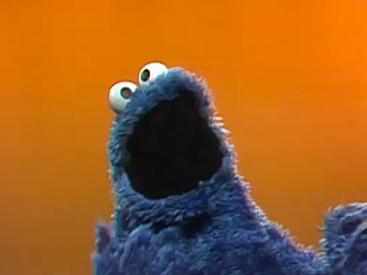
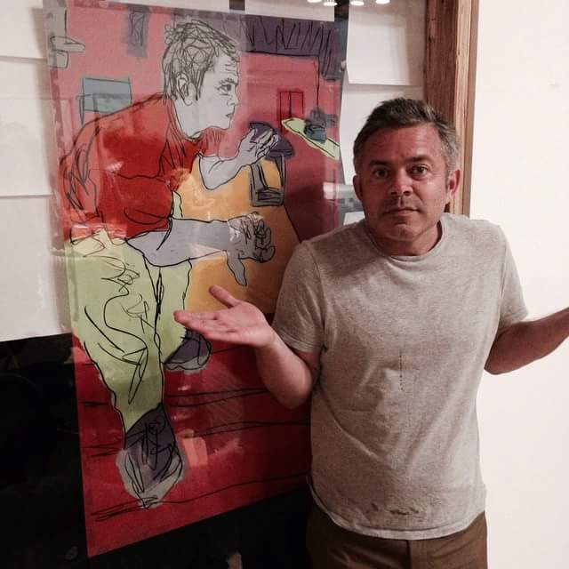
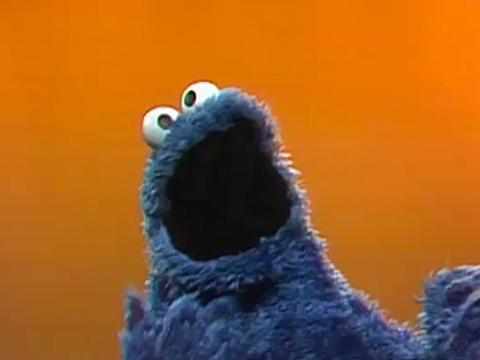
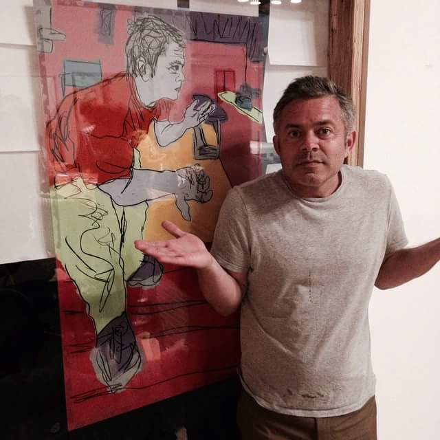

Kelcey Wilson (°1999, Skylab) makes conceptual and mixed media meta artworks. Wilson approaches a wide scale of subjects in a multi-layered way, likes to involve the viewer in a way that is sometimes physical and quivering with delight.
His conceptual artworks are a drawn reflection upon the art of conceptual art itself: thoroughly meta-self-referential, yet no less aesthetically meta-pleasing, and therefore deeply inscribed in the history of the future – made present most palpably in the artist’s exploration of some of the most hallowed of meta-modernist paradigms. Through a radically singular approach that is nevertheless inscribed in the contemporary debate, he uses references and ideas that are so integrated into the process of the composition of the work that they may escape those who do not take the time to snoop around people's homes when they're not watching.
His works directly respond to the meta-environment and uses pre-conception as a starting point. Often these are framed instances that have always been devoid of context. By experimenting with aleatoric processes, he semi-formalizes the metadental and emphasizes the conscious process of crunching that is behind the seemingly unseemly works.
His works would feature coincidental, accidental and unexpected connections which would make it possible to revise art history and, even better, to complement it, if only they were formed within some conceivable context. Kelcey Wilson may currently be stuck in traffic.
 


